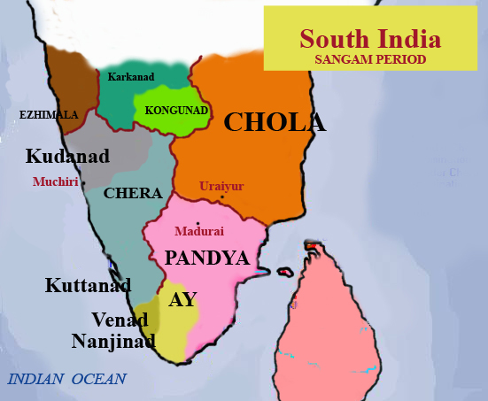

Sangam Age | 18 Nov 2019
Introduction
- The period roughly between the 3rd century B.C. and 3rd century A.D. in South India (the area lying to the south of river Krishna and Tungabhadra) is known as Sangam Period.
- It has been named after the Sangam academies held during that period that flourished under the royal patronage of the Pandya kings of Madurai.
- At the sangams eminent scholars assembled and functioned as the board of censors and the choicest literature was rendered in the nature of anthologies.
- These literary works were the earliest specimens of Dravidian literature.
- According to the Tamil legends, there were three Sangams (Academy of Tamil poets) held in the ancient South India popularly called Muchchangam.
- The First Sangam, is believed to be held at Madurai, attended by gods and legendary sages. No literary work of this Sangam is available.
- The Second Sangam was held at Kapadapuram, only Tolkappiyam survives from this.
- The Third Sangam was also held at Madurai. A few of these Tamil literary works have survived and are a useful sources to reconstruct the history of the Sangam period.
Sangam Literature: Major source giving details of Sangam Age
The Sangam literature includes Tolkappiyam, Ettutogai, Pattuppattu, Pathinenkilkanakku, and two epics named – Silappathikaram and Manimegalai .
- Tolkappiyam was authored by Tolkappiyar and is considered the earliest of Tamil literary work. Though it is a work on Tamil grammar but it also provides insights on the political and socio-economic conditions of the time.
- Ettutogai (Eight Anthologies) consist of eight works – Aingurunooru, Narrinai, Aganaooru, Purananooru, Kuruntogai, Kalittogai, Paripadal and Padirruppatu.
- The Pattuppattu (Ten Idylls) consists of ten works – Thirumurugarruppadai, Porunararruppadai, Sirupanarruppadai, Perumpanarruppadai, Mullaippattu, Nedunalvadai, Maduraikkanji, Kurinjippatttu,Pattinappalai and Malaipadukadam.
- Pathinenkilkanakku contains eighteen works about ethics and morals. The most important among these works is Tirukkural authored by Thiruvalluvar, the tamil great poet and philosopher.
- The two epics Silappathikaram is written by Elango Adigal and Manimegalai by Sittalai Sattanar. They also provide valuable details about the Sangam society and polity.
Other Sources that give details about the Sangam Period are –
- The Greek authors like Megasthenes, Strabo, Pliny and Ptolemy mentioning about commercial trade contacts between the West and South India.
- The Ashokan inscriptions mentioned about the Chera, Chola and Pandya rulers to the south of Mauryan empire.
- Hathigumpha inscription of Kharavela of Kalinga also has mention of Tamil kingdoms.
Political History of Sangam Period
South India, during the Sangam Age, was ruled by three dynasties-the Cheras, Cholas and Pandyas. The main source of information about these kingdoms is traced from the literary references of Sangam Period.
Cheras
- The Cheras controlled the central and northern parts of Kerala and the Kongu region of Tamil Nadu.
- Vanji was their capital and the ports of the west coast, Musiri and Tondi, were under their control.
- The emblem of Cheras was “bow and arrow”.
- The Pugalur inscription of the 1st century AD has reference to three generations of Chera rulers.
- The Cheras owed its importance to trade with the Romans. They also built a temple of Augustus there.
- The greatest ruler of Cheras was Senguttuvan, the Red Chera or the Good Chera, who belonged to the 2nd century A.D.
- His military achievements have been chronicled in epic Silapathikaram, with details about his expedition to the Himalayas where he defeated many north Indian rulers.
- Senguttuvan introduced the Pattini cult or the worship of Kannagi as the ideal wife in Tamil Nadu.
- He was the first to send an embassy to China from South India.
Cholas
- The Cholas controlled the central and northern parts of Tamil Nadu.
- Their core area of rule was the Kaveri delta, later known as Cholamandalam.
- Their capital was Uraiyur (near Tiruchirapalli town) and Puhar or Kaviripattinam was an alternative royal residence and chief port town.
- Tiger was their emblem.
- The Cholas also maintained an efficient navy.
- King Karikala was a famous king of the Sangam Cholas.
- Pattinappalai portrays his life and military conquests.
- Many Sangam poems mention the Battle of Venni where he defeated the confederacy of Cheras, Pandyas and eleven minor chieftains.
- Karikala’s military achievements made him the overlord of the whole Tamil region of that time.
- Trade and commerce flourished during his reign.
- He founded the port city of Puhar (identical with Kaveripattinam) and constructed 160 km of embankment along the Kaveri River.
Pandyas
- The Pandyas ruled from Madurai.
- Korkai was their main port, located near the confluence of Thampraparani with the Bay of Bengal. It was famous for pearl fishery and chank diving.
- Their emblem was the “Fish”.
- They patronized the Tamil Sangams and facilitated the compilation of the Sangam poems.
- Rulers kept a regular army.
- Trade was prosperous and their pearls were famous.
- Sati, caste, idol worship were common. Widows were treated badly.
- They adopted the Vedic religion of sacrifice and patronized Brahmin priests.
- Their power declined with the invasion of a tribe called the Kalabhras.
- After the Sangam Age, this dynasty lost its significance for more than a century, only to rise once again at the end of the 6th century.
Sangam Polity and Administration
- During the Sangam period hereditary monarchy was the form of government.
- Each of the dynasties of Sangam age had a royal emblem – tiger for the Cholas, carp/Fish for the Pandyas, and bow for the Cheras.
- The king was assisted by a wide body of officials who were categorised into five councils.
- They were ministers (amaichar), priests (anthanar), envoys (thuthar), military commanders (senapathi), and spies (orrar).
- The military administration was efficiently organized and a regular army was associated with each ruler.
- The chief source of state’s income was land revenue while a custom duty was also imposed on foreign trade.
- Major source of fulfilling the royal treasury was the booty captured in wars.
- The roads and highways were maintained and guarded to prevent robbery and smuggling.
Sangam Society
- Tolkappiyam refers to the Five-fold division of lands – Kurinji (hilly tracks), Mullai (pastoral), Marudam (agricultural), Neydal (coastal) and Palai (desert).
- Tolkappiyam also refers to four castes namely arasar(Ruling Class), anthanar, vanigar(carried on trade and commerce) and vellalar(Agriculturists).
- Ancient primitive tribes like Thodas, Irulas, Nagas and Vedars lived in this period.
Position of Women during Sangam Age
- A lot of information is available in the Sangam literature to understand the position of women during the Sangam age.
- Women had respect and were allowed intellectual pursuits.There were women poets like Avvaiyar, Nachchellaiyar, and Kakkaipadiniyar who flourished and contributed to Tamil literature.
- Women were allowed to choose their life partners. But life of widows was miserable.
- There is also a mention about the practice of Sati being prevalent in the higher strata of society.
Religion
- The primary deity of the Sangam period was Murugan, who is hailed as Tamil God.
- The worship of Murugan was having an ancient origin and the festivals relating to God Murugan was mentioned in the Sangam literature.
- Murugan was honoured with six abodes known as Arupadai Veedu.
- Other gods worshipped during the Sangam period were Mayon (Vishnu), Vendan (Indiran), Varunan and Korravai.
- The Hero Stone or Nadu Kal worship was significant in the Sangam period and was erected in memory of the bravery shown by the warriors in the battle.
Economy of the Sangam Age
- Agriculture was the chief occupation where rice was the most common crop.
- The handicraft included weaving, metal works and carpentry, ship building and making of ornaments using beads, stones and ivory.
- These were in great demand in the internal and external trade that was at its peak during the Sangam period.
- A high expertise was attained in spinning and weaving of cotton and silk clothes. These were in great demand in the western world especially for the cotton clothes woven at Uraiyur.
- The port city of Puhar became an important place of foreign trade, as big ships entered this port containing precious goods.
- Other significant ports of commercial activity were Tondi, Musiri, Korkai, Arikkamedu and Marakkanam.
- Many gold and silver coins that were issued by the Roman Emperors like Augustus, Tiberius and Nero have been found in all parts of Tamil Nadu indicating flourishing trade.
- Major exports of the Sangam age were cotton fabrics and spices like pepper, ginger, cardamom, cinnamon and turmeric along with ivory products, pearls and precious stones.
- Major imports for the traders were horses, gold, and sweet wine.
End of Sangam Age
- The Sangam period slowly witnessed its decline towards the end of the 3rd century A.D.
- The Kalabhras occupied the Tamil country post-sangam period between 300 AD to 600 AD, whose period was called an interregnum or 'dark age' by earlier historians.